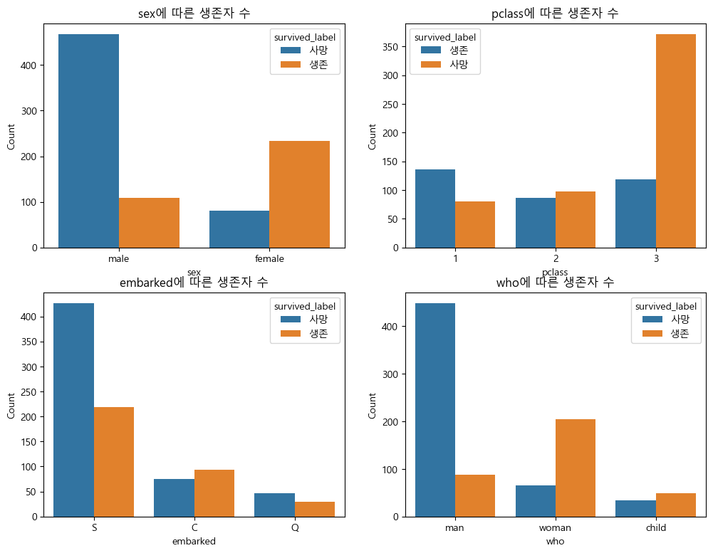
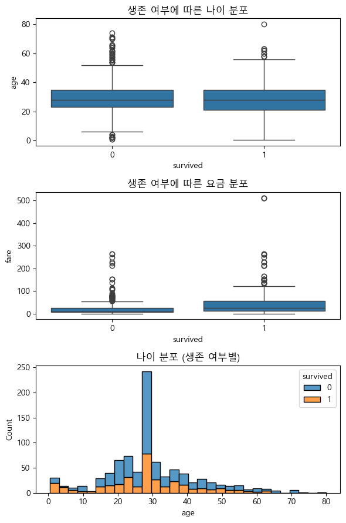

# 라이브러리 불러오기
import numpy as np
import pandas as pd
import matplotlib.pyplot as plt
import seaborn as sns타이타닉 생존자 분석
- RMS 타이타닉은 영국의 화이트 스타 라인이 운영한 북대서양 횡단 여객선으로, 1912년 4월 10일 첫 출항하였다. 영국의 사우샘프턴을 떠나 미국의 뉴욕으로 향하던 중에 4월 15일 빙산과 충돌하여 침몰하였으며, 이로 인해 1,514명이 사망한 것으로 알려져 있다.
- 타이타닉 데이터를 분석하여 생존에 영향을 준 요인을 파악하고, 이를 바탕으로 생존 여부를 예측하는 모델을 학습해보자.
1. 데이터셋
- [데이터] seaborn에서 제공하는 1900년대 타이타닉 탑승자들에 대한 데이터를 제공함.
- 타이타닉 생존여부에 영향을 미치는 요인은 무엇인지 파악하고,생존여부를 분류하는 모델을 학습시키고자 함.
- 총 891개의 관측값과 15개의 독립변수(feature), 1개의 종속변수(target)으로 구성됨
2. 데이터 확인 및 전처리
# 데이터 불러오기
df = sns.load_dataset('titanic')
df.head()| survived | pclass | sex | age | sibsp | parch | fare | embarked | class | who | adult_male | deck | embark_town | alive | alone | |
|---|---|---|---|---|---|---|---|---|---|---|---|---|---|---|---|
| 0 | 0 | 3 | male | 22.0 | 1 | 0 | 7.2500 | S | Third | man | True | NaN | Southampton | no | False |
| 1 | 1 | 1 | female | 38.0 | 1 | 0 | 71.2833 | C | First | woman | False | C | Cherbourg | yes | False |
| 2 | 1 | 3 | female | 26.0 | 0 | 0 | 7.9250 | S | Third | woman | False | NaN | Southampton | yes | True |
| 3 | 1 | 1 | female | 35.0 | 1 | 0 | 53.1000 | S | First | woman | False | C | Southampton | yes | False |
| 4 | 0 | 3 | male | 35.0 | 0 | 0 | 8.0500 | S | Third | man | True | NaN | Southampton | no | True |
df.info() # 데이터 확인시 중복되는 변수나, 불필요한 변수는 제거할것임.<class 'pandas.core.frame.DataFrame'>
RangeIndex: 891 entries, 0 to 890
Data columns (total 15 columns):
# Column Non-Null Count Dtype
--- ------ -------------- -----
0 survived 891 non-null int64
1 pclass 891 non-null int64
2 sex 891 non-null object
3 age 714 non-null float64
4 sibsp 891 non-null int64
5 parch 891 non-null int64
6 fare 891 non-null float64
7 embarked 889 non-null object
8 class 891 non-null category
9 who 891 non-null object
10 adult_male 891 non-null bool
11 deck 203 non-null category
12 embark_town 889 non-null object
13 alive 891 non-null object
14 alone 891 non-null bool
dtypes: bool(2), category(2), float64(2), int64(4), object(5)
memory usage: 80.7+ KB- 타이타닉 데이터를 확인한 결과, 관측값은 891 개, 변수는 15개로 나타남.
- 타이타닉호 생존에 영향을 미치는(feature)은 다음과 같음
- pclass 객실등급(1,2,3)
- sex 성별
- age 나이
- sibsp 함께 탐승한 형제자매, 배우자 수
- parch 함께 탑승한 부모, 자식수
- fare 요금
- embarked 탑승항구(S,C,Q)
- deck 갑판
- who 사람구분(man,woman,child)
- 종속변수( target) 는 ’survived’임
# 데이터 전처리 :(1) 타이타닉 생존여부에 영향을 미치는 feature 선택
df1 = df[['survived','pclass','sex','age','sibsp','parch','fare','embarked','deck','who']].copy()
df1.head()| survived | pclass | sex | age | sibsp | parch | fare | embarked | deck | who | |
|---|---|---|---|---|---|---|---|---|---|---|
| 0 | 0 | 3 | male | 22.0 | 1 | 0 | 7.2500 | S | NaN | man |
| 1 | 1 | 1 | female | 38.0 | 1 | 0 | 71.2833 | C | C | woman |
| 2 | 1 | 3 | female | 26.0 | 0 | 0 | 7.9250 | S | NaN | woman |
| 3 | 1 | 1 | female | 35.0 | 1 | 0 | 53.1000 | S | C | woman |
| 4 | 0 | 3 | male | 35.0 | 0 | 0 | 8.0500 | S | NaN | man |
# 데이터 전처리: (2) 결측값 확인
df1.isna().sum()survived 0
pclass 0
sex 0
age 177
sibsp 0
parch 0
fare 0
embarked 2
deck 688
who 0
dtype: int64# 'age' 결측값 처리 : 중앙값으로 대체.
df1['age'] = df1['age'].fillna(df1['age'].median())
# 'deck' 결측값 처리 : 결측값이 너무 많아 제거.
df1.drop('deck', axis=1, inplace=True)
# 'embarked' 결측값 처리: 최빈값으로 대체.
df1['embarked'] = df1['embarked'].fillna(df1['embarked'].mode()[0])
df1.isna().sum() # 결측값 제거 확인survived 0
pclass 0
sex 0
age 0
sibsp 0
parch 0
fare 0
embarked 0
who 0
dtype: int643.데이터 분할 : 학습데이터, 평가데이터
- 학습 데이터와 평가 데이터를 7:3 비율로 분할함
- 타이타닉 데이터는 크기가 작기 때문에 7:3(train:test) 분할이 적절
# 학습/평가 데이터 분할(7:3비율)
# Feature, Target 분리
X = df1.drop('survived', axis=1) #feature
y = df1['survived'] #target
# 학습/평가 데이터 분할 (7:3 비율
from sklearn.model_selection import train_test_split
X_train, X_test, y_train, y_test = train_test_split(X, y, test_size=0.3, random_state=42)X_train| pclass | sex | age | sibsp | parch | fare | embarked | who | |
|---|---|---|---|---|---|---|---|---|
| 445 | 1 | male | 4.0 | 0 | 2 | 81.8583 | S | child |
| 650 | 3 | male | 28.0 | 0 | 0 | 7.8958 | S | man |
| 172 | 3 | female | 1.0 | 1 | 1 | 11.1333 | S | child |
| 450 | 2 | male | 36.0 | 1 | 2 | 27.7500 | S | man |
| 314 | 2 | male | 43.0 | 1 | 1 | 26.2500 | S | man |
| ... | ... | ... | ... | ... | ... | ... | ... | ... |
| 106 | 3 | female | 21.0 | 0 | 0 | 7.6500 | S | woman |
| 270 | 1 | male | 28.0 | 0 | 0 | 31.0000 | S | man |
| 860 | 3 | male | 41.0 | 2 | 0 | 14.1083 | S | man |
| 435 | 1 | female | 14.0 | 1 | 2 | 120.0000 | S | child |
| 102 | 1 | male | 21.0 | 0 | 1 | 77.2875 | S | man |
623 rows × 8 columns
y_train445 1
650 0
172 1
450 0
314 0
..
106 1
270 0
860 0
435 1
102 0
Name: survived, Length: 623, dtype: int644. 데이터 탐색
# 요약통계량 확인
df1_train = pd.concat([X_train,y_train],axis = 1)
df1_train.head()| pclass | sex | age | sibsp | parch | fare | embarked | who | survived | |
|---|---|---|---|---|---|---|---|---|---|
| 445 | 1 | male | 4.0 | 0 | 2 | 81.8583 | S | child | 1 |
| 650 | 3 | male | 28.0 | 0 | 0 | 7.8958 | S | man | 0 |
| 172 | 3 | female | 1.0 | 1 | 1 | 11.1333 | S | child | 1 |
| 450 | 2 | male | 36.0 | 1 | 2 | 27.7500 | S | man | 0 |
| 314 | 2 | male | 43.0 | 1 | 1 | 26.2500 | S | man | 0 |
# 한글 깨짐 현상에 대한 해결 방법
import matplotlib as mpl
plt.rc('font', family='Malgun Gothic')
mpl.rcParams['axes.unicode_minus'] = Falsedf1['survived_label'] = df1['survived'].map({0: '사망', 1: '생존'})
# 시각화할 변수
cat_features = ['sex', 'pclass', 'embarked', 'who']
plt.figure(figsize=(12,9))
for i, feature in enumerate(cat_features):
plt.subplot(2, 2, i + 1)
ax = sns.countplot(x=feature, hue='survived_label', data=df1)
plt.title(f'{feature}에 따른 생존자 수')
plt.ylabel('Count')
# Figure 생성 (3행 1열)
fig, axes = plt.subplots(3, 1, figsize=(6,9))
# 1. 생존 여부에 따른 나이 분포 (boxplot)
sns.boxplot(x='survived', y='age', data=df1, ax=axes[0])
axes[0].set_title('생존 여부에 따른 나이 분포')
# 2. 생존 여부에 따른 요금 분포 (boxplot)
sns.boxplot(x='survived', y='fare', data=df1, ax=axes[1])
axes[1].set_title('생존 여부에 따른 요금 분포')
# 3. 나이 히스토그램 (생존 여부별)
sns.histplot(data=df1, x='age', hue='survived', multiple='stack', ax=axes[2])
axes[2].set_title('나이 분포 (생존 여부별)')
# 레이아웃 정리
plt.tight_layout()
plt.show()
- 데이터 해석
- 성별 (sex)에 따른 생존자 수는 여성 승객의 생존자 수가 남성보다 월등히 많았다. 특히 여성은 사망자보다 생존자가 많았지만, 남성은 사망자가 압도적으로 많았다. 이는 여성과 아이를 먼저 구조하는 원칙이 실제 구조 과정에 반영되었음을 보여준다.
- 객실 등급 (pclass)에 따른 생존자 수는 1등급 승객의 생존률이 가장 높았고, 3등급 승객은 사망자가 더 많았다. 이는 상위 계층이 구조에 더 빠르게 접근할 수 있었거나, 위치상 구조가 용이했을 가능성을 시사한다.
- 탑승 항구 (embarked)에 따른 생존자 수는 Cherbourg(C항)에서 탑승한 승객의 생존률이 높았으며, Southampton(S항) 탑승자는 수는 많았지만 사망률도 높았다. 항구별 승객의 계층 구성 혹은 배치 구조가 생존에 영향을 준 것으로 해석할 수 있다.
- 사람 유형 (who)에 따른 생존자 수는 who 변수로 구분된 woman, child는 생존률이 매우 높았고, 반면 man은 생존률이 가장 낮았다. 이 역시 구조 우선 순위가 여성과 아동에게 있었음을 다시 한 번 보여준다.
- 나이 (age)와 생존 여부 박스플롯과 히스토그램 분석 결과, 어린 승객일수록 생존 확률이 높은 경향을 보였으며, 노년층은 생존률이 낮았다. 구조 순서와 신체 조건 등 다양한 요인이 작용했을 것으로 판단된다.
- 요금 (fare)과 생존 여부 생존자들은 평균적으로 더 높은 요금을 지불한 경향이 있었다. 요금은 객실 등급과 밀접한 관련이 있으므로, 상위 계층일수록 생존률이 높았음을 다시 확인할 수 있다.
5.분류 모델 학습
from sklearn.neighbors import KNeighborsClassifier
from sklearn.model_selection import cross_val_score, train_test_split
from sklearn.metrics import accuracy_score, precision_score, recall_score# 0. 범주형 변수 숫자로 변환
df1['sex'] = df1['sex'].map({'female': 0, 'male': 1})
df1['embarked'] = df1['embarked'].map({'S': 0, 'C': 1, 'Q': 2})
df1['who'] = df1['who'].map({'child': 0, 'woman': 1, 'man': 2})# 1. Feature/Target 분리
X = df1.drop(['survived', 'survived_label'], axis=1) # survived 제외
y = df1['survived'] # target은 0/1
# 2. 학습/평가 데이터 분할 (7:3)
X_train, X_test, y_train, y_test = train_test_split(X, y, test_size=0.3, random_state=42)# 3. 최적의 k 찾기
k_range = range(1, 20, 2) # 1, 3, 5, ..., 19
k_scores = []
for k in k_range:
knn = KNeighborsClassifier(n_neighbors=k)
scores = cross_val_score(knn, X_train, y_train, cv=5, scoring='accuracy')
k_scores.append(scores.mean())
print(f"k = {k}일 때 평균 정확도: {scores.mean():.3f}")
k = 1일 때 평균 정확도: 0.668
k = 3일 때 평균 정확도: 0.701
k = 5일 때 평균 정확도: 0.701
k = 7일 때 평균 정확도: 0.703
k = 9일 때 평균 정확도: 0.711
k = 11일 때 평균 정확도: 0.708
k = 13일 때 평균 정확도: 0.713
k = 15일 때 평균 정확도: 0.709
k = 17일 때 평균 정확도: 0.714
k = 19일 때 평균 정확도: 0.708# 4. 최적의 k 선택
best_k = k_range[k_scores.index(max(k_scores))]
print(f"\n✅ 최적의 k값은 {best_k}이며, 평균 정확도는 {max(k_scores):.3f}")
✅ 최적의 k값은 17이며, 평균 정확도는 0.714# 5. 최적의 k로 최종 모델 학습
knn = KNeighborsClassifier(n_neighbors=best_k)
knn.fit(X_train, y_train)KNeighborsClassifier(n_neighbors=17)In a Jupyter environment, please rerun this cell to show the HTML representation or trust the notebook.
On GitHub, the HTML representation is unable to render, please try loading this page with nbviewer.org.
Parameters
| n_neighbors | 17 | |
| weights | 'uniform' | |
| algorithm | 'auto' | |
| leaf_size | 30 | |
| p | 2 | |
| metric | 'minkowski' | |
| metric_params | None | |
| n_jobs | None |
# 6. 예측 및 평가
y_pred = knn.predict(X_test)
accuracy = accuracy_score(y_test, y_pred)
precision = precision_score(y_test, y_pred)
recall = recall_score(y_test, y_pred)print(f"\n📊 최종 평가 결과 (k={best_k})")
print(f"정확도: {accuracy:.3f}")
print(f"정밀도: {precision:.3f}")
print(f"재현도: {recall:.3f}")
📊 최종 평가 결과 (k=17)
정확도: 0.713
정밀도: 0.750
재현도: 0.4596. 분류 모델 평가
타이타닉 생존자 예측을 위해 K-NN 분류 모델을 적용하였으며, 교차 검증(cross-validation)을 통해 모델의 성능을 비교한 결과, k=17일 때 가장 높은 정확도를 기록하여 해당 값을 최적의 하이퍼파라미터로 선정하였다.
최종적으로 학습된 K-NN 모델에 대해 테스트 데이터를 기반으로 성능을 평가한 결과는 다음과 같다:
정확도는 0.713으로, 전체 테스트 샘플 중 약 71.3%를 올바르게 분류하였다. 이는 모델이 전체적으로는 비교적 안정적인 예측 성능을 갖추고 있음을 의미한다.
정밀도는 0.750으로, 생존자(1)로 예측한 대상 중 실제로 생존자인 비율이 75%에 달한다. 즉, 모델이 생존자라고 판단한 예측은 상당히 신뢰할 수 있는 편이다.
반면, 재현율은 0.459로 비교적 낮게 나타났다. 이는 실제 생존자 중 약 45.9%만을 모델이 생존자라고 제대로 예측했다는 의미로, 모델이 생존자를 놓치는 경우가 상당수 존재함을 시사한다. 종합적으로 볼 때, 해당 K-NN 모델은 생존자 예측에 있어서 정밀도는 높지만, 재현율이 낮은 보수적인 성향의 분류 모델로 해석할 수 있다. 이는 모델이 생존자임을 신중하게 판단하려는 경향이 있으며, 그로 인해 실제 생존자를 일부 놓치는 현상이 발생하는 것이다